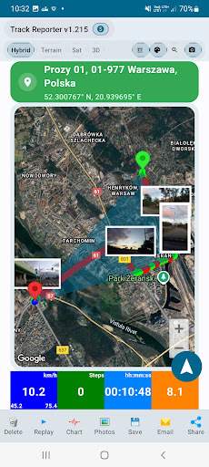

GUIDE • WORK ORDER MANAGEMENT
GUIDE • WORK ORDER MANAGEMENT
Field Service Work Order Management with GPS Route Evidence
Learn how to create and assign Work Orders, follow job status, attach recorded GPS routes and review field work with Track Reporter.
Read the guidePractical guides to work order management, GPS route documentation, timestamped photo evidence, inspection reports and field team visibility.
GUIDE • WORK ORDER MANAGEMENT
Learn how to create and assign Work Orders, follow job status, attach recorded GPS routes and review field work with Track Reporter.
Read the guide GUIDE • FLEET MONITORING
GUIDE • FLEET MONITORING
See how Track Reporter combines user-controlled live GPS sharing, completed route history and photo evidence. Explore a real 3D route demo in your browser.
Read the guide
GUIDE • SITE INSPECTIONSCreate professional site inspection records using GPS routes, location-tagged photos and PDF reports. Follow the practical Android workflow and view real screenshots.
Read the guide GUIDE • GPS EVIDENCE
GUIDE • GPS EVIDENCE
Build a clearer record of field visits with GPS routes, location-tagged photo evidence and structured PDF reports. A practical guide for inspectors, technicians and fleet teams.
Read the guideCapture GPS routes, photos and reports in one Android app.